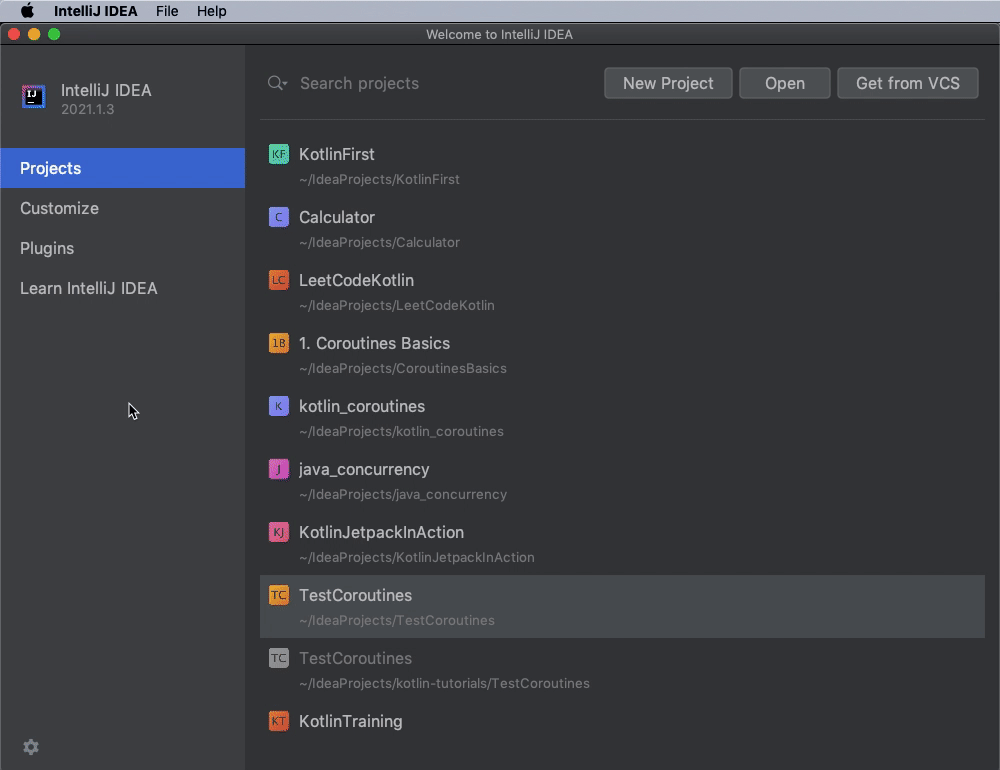
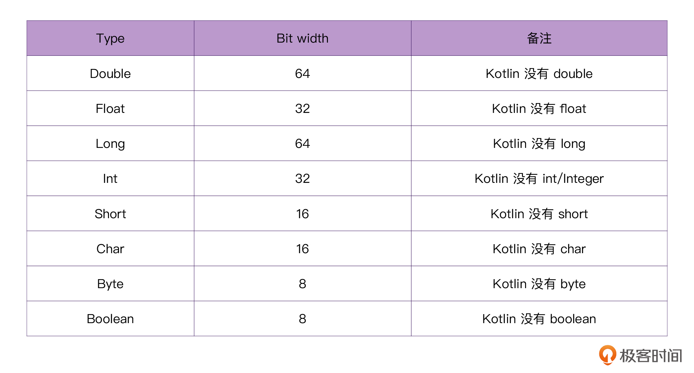
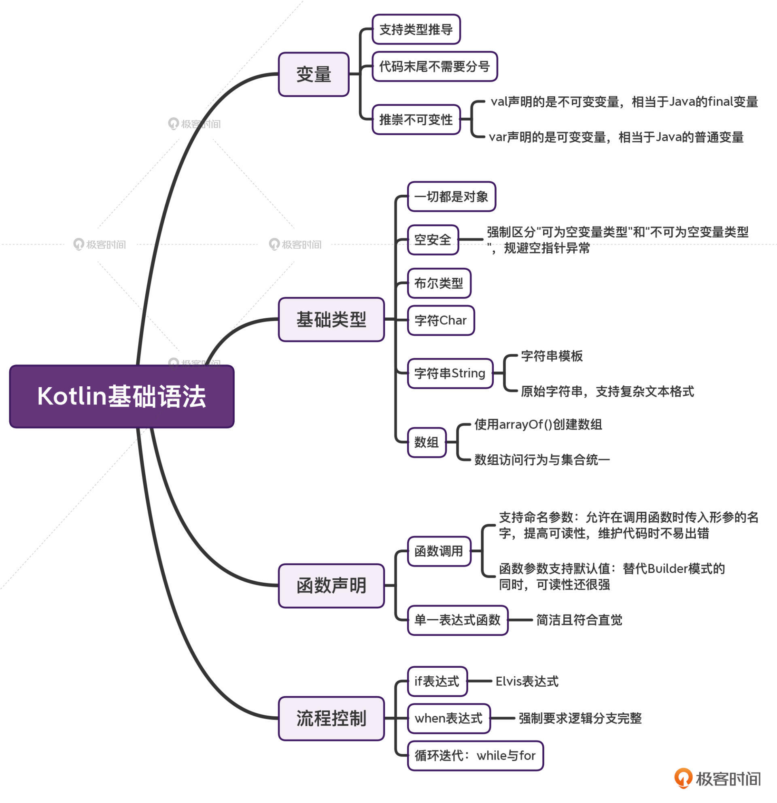

AudioKotlin基础语法：正式开启学习之旅
你好，我是朱涛。从今天开始，我们就正式踏上 Kotlin 语言学习与实践的旅途了。这节课，我想先带你来学习下 Kotlin 的基础语法，包括变量、基础类型、函数和流程控制。这些基础语法是程序最基本的元素。
不过，如果你有使用 Java 的经验，可能会觉得今天的内容有点多余，毕竟 Kotlin 和 Java 的基础语法是比较相似的，它们都是基于 JVM 的语言。但其实不然，Kotlin 作为一门新的语言，它包含了许多新的特性，由此也决定着 Kotlin 的代码风格。如果你不够了解 Kotlin 的这些新特性，你会发现自己只是换了种方式在写 Java 而已。
并且，在具备 Java 语言的知识基础上，这节课的内容也可以帮你快速将已有的经验迁移过来。这样的话，针对相似的语法，你可以直接建立 Kotlin 与 Java 的对应关系，进而加深理解。当然，即使你没有其他编程经验也没关系，从头学即可，Kotlin 的语法足够简洁，也非常适合作为第一门计算机语言来学习。
在课程中，我会用最通俗易懂的语言，来给你解释 Kotlin 的基础知识，并且会结合一些 Java 和 Kotlin 的代码案例，来帮助你直观地体会两种语言的异同点。而针对新的语法，我也会详细解释它存在的意义，以及都填补了 Java 的哪些短板，让你可以对 Kotlin 新语法的使用场景做到心中基本有数。
开发环境
在正式开始学习基础语法之前，我们还需要配置一下 Kotlin 语言的环境，因为直接从代码开始学能给我们带来最直观的体验。
那么要运行 Kotlin 代码，最快的方式，就是使用 Kotlin 官方的PlayGround。通过这个在线工具，我们可以非常方便地运行 Kotlin 代码片段。当然，这种方式用来临时测试一小段代码是没有问题的，但对于复杂的工程就有些力不从心了。
另一种方式，也是我个人比较推荐的方式，那就是安装IntelliJ IDEA。它是 Kotlin 官方提供的集成开发工具，也是世界上最好的 IDE 之一，如果你用过 Android Studio，你一定会对它很熟悉，因为 Android Studio 就是由 IntelliJ IDEA 改造的。
如果你的电脑没有 Java 环境，在安装完最新版的 IntelliJ IDEA 以后，通过“File -> Project Structure -> SDKs”，然后点击“加号按钮”就可以选择第三方提供的 OpenJDK 1.8 版本进行下载了。

需要注意的是，IntelliJ IDEA 分为 Ultimate 付费版和 Community 免费版，对于我们的 Kotlin 学习来说，免费版完全够用。
这样，在配置好了开发环境之后，我们就可以试着一边敲代码，一边体会、思考和学习 Kotlin 语言中这些最基础的语法知识了。那么下面我们就来看下，在 Kotlin 语言中是如何定义变量的吧。
变量
在 Java/C 当中，如果我们要声明变量，我们必须要声明它的类型，后面跟着变量的名称和对应的值，然后以分号结尾。就像这样：
Integer price = 100;而 Kotlin 则不一样，我们要使用“val”或者是“var”这样的关键字作为开头，后面跟“变量名称”，接着是“变量类型”和“赋值语句”，最后是分号结尾。就像这样：
/*
关键字 变量类型
↓ ↓ */
var price: Int = 100; /*
↑ ↑
变量名 变量值 */不过，像 Java 那样每写一行代码就写一个分号，其实也挺麻烦的。所以为了省事，在 Kotlin 里面，我们一般会把代码末尾的分号省略，就像这样：
var price: Int = 100另外，由于 Kotlin 支持类型推导，大部分情况下，我们的变量类型可以省略不写，就像这样：
var price = 100 // 默认推导类型为： Int还有一点我们要注意，就是在 Kotlin 当中，我们应该尽可能避免使用 var，尽可能多地去使用 val。
var price = 100
price = 101
val i = 0
i = 1 // 编译器报错原因其实很简单：
val 声明的变量，我们叫做不可变变量，它的值在初始化以后就无法再次被修改，它相当于 Java 里面的 final 变量。
var 声明的变量，我们叫做可变变量，它对应 Java 里的普通变量。
基础类型
了解了变量类型如何声明之后，我们再来看下 Kotlin 中的基础类型。
基础类型，包括我们常见的数字类型、布尔类型、字符类型，以及前面这些类型组成的数组。这些类型是我们经常会遇到的概念，因此我们把它统一归为“基础类型”。
一切都是对象
在 Java 里面，基础类型分为原始类型（Primitive Types）和包装类型（Wrapper Type）。比如，整型会有对应的 int 和 Integer，前者是原始类型，后者是包装类型。
int i = 0; // 原始类型
Integer j = 1; // 包装类型Java 之所以要这样做，是因为原始类型的开销小、性能高，但它不是对象，无法很好地融入到面向对象的系统中。而包装类型的开销大、性能相对较差，但它是对象，可以很好地发挥面向对象的特性。在 JDK 源码当中，我们可以看到 Integer 作为包装类型，它是有成员变量以及成员方法的，这就是它作为对象的优势。
然而，在 Kotlin 语言体系当中，是没有原始类型这个概念的。这也就意味着，在 Kotlin 里，一切都是对象。

实际上，从某种程度上讲，Java 的类型系统并不是完全面向对象的，因为它存在原始类型，而原始类型并不属于对象。而 Kotlin 则不一样，它从语言设计的层面上就规避了这个问题，类型系统则是完全面向对象的。
我们看一段代码，来更直观地感受 Kotlin 的独特之处：
val i: Double = 1.toDouble()可以发现，由于在 Kotlin 中，整型数字“1”被看作是对象了，所以我们可以调用它的成员方法 toDouble()，而这样的代码在 Java 中是无法实现的。
空安全
既然 Kotlin 中的一切都是对象，那么对象就有可能为空。也许你会想到写这样的代码：
val i: Double = null // 编译器报错可事实上，以上的代码并不能通过 Kotlin 编译。这是因为 Kotlin 强制要求开发者在定义变量的时候，指定这个变量是否可能为 null。对于可能为 null 的变量，我们需要在声明的时候，在变量类型后面加一个问号“?”：
val i: Double = null // 编译器报错
val j: Double? = null // 编译通过并且由于 Kotlin 对可能为空的变量类型做了强制区分，这就意味着，“可能为空的变量”无法直接赋值给“不可为空的变量”，当然，反向赋值是没有问题的。
var i: Double = 1.0
var j: Double? = null
i = j // 编译器报错
j = i // 编译通过Kotlin 这么设计的原因也很简单，如果我们将“可能为空的变量”直接赋值给了“不可为空的变量”，这会跟它自身的定义产生冲突。而如果我们实在有这样的需求，也不难实现，只要做个判断即可：
var i: Double = 1.0
val j: Double? = null
if (j != null) {
i = j // 编译通过
}好，在了解了 Kotlin 和 Java 这两种语言的主要区别后，下面就让我们来全面认识下 Kotlin 的基础类型。
数字类型
首先，在数字类型上，Kotlin 和 Java 几乎是一致的，包括它们对数字“字面量”的定义方式。
val int = 1
val long = 1234567L
val double = 13.14
val float = 13.14F
val hexadecimal = 0xAF
val binary = 0b01010101这里我也来给你具体介绍下：
整数默认会被推导为“Int”类型；
Long 类型，我们则需要使用“L”后缀；
小数默认会被推导为“Double”，我们也可以使用“D”后缀；
Float 类型，我们需要使用“F”后缀；
使用“0x”，来代表十六进制字面量；
使用“0b”，来代表二进制字面量。
但是，对于数字类型的转换，Kotlin 与 Java 的转换行为是不一样的。Java 可以隐式转换数字类型，而 Kotlin 更推崇显式转换。
举个简单的例子，在 Java 和 C 当中，我们经常直接把 int 类型赋值给 long 类型，编译器会自动为我们做类型转换，如下所示：
int i = 100;
long j = i;这段代码按照 Java 的编程思维方式来看，的确好像是 OK 的。但是你要注意，虽然 Java 编译器不会报错，可它仍然可能会带来问题，因为它们本质上不是一个类型，int、long、float、double 这些类型之间的互相转换是存在精度问题的。尤其是当这样的代码掺杂在复杂的逻辑中时，在碰到一些边界条件的情况下，即使出现了 Bug 也不容易排查出来。
所以，同样的代码，在 Kotlin 当中是行不通的：
val i = 100
val j: Long = i // 编译器报错在 Kotlin 里，这样的隐式转换被抛弃了。正确的做法应该是显式调用 Int 类型的 toLong() 函数：
val i = 100
val j: Long = i.toLong() // 编译通过其实，如果我们仔细翻看 Kotlin 的源代码，会发现更多类似的函数，比如 toByte()、toShort()、toInt()、toLong()、toFloat()、toDouble()、toChar() 等等。Kotlin 这样设计的优势也是显而易见的，我们代码的可读性更强了，将来也更容易维护了。
布尔类型
然后我们再来了解下 Kotlin 中布尔类型的变量，它只有两种值，分别是 true和false。布尔类型支持一些逻辑操作，比如说：
“&”代表“与运算”；
“|”代表“或运算”；
“!”代表“非运算”；
“&&”和“||”分别代表它们对应的“短路逻辑运算”。
val i = 1
val j = 2
val k = 3
val isTrue: Boolean = i < j && j < k字符：Char
Char 用于代表单个的字符，比如'A'、'B'、'C'，字符应该用单引号括起来。
val c: Char = 'A'如果你有 Java 或 C 的使用经验，也许会写出这样的代码：
val c: Char = 'A'
val i: Int = c // 编译器报错这个问题其实跟前面 Java 的数字类型隐式转换的问题类似，所以针对这种情况，我们应该调用对应的函数来做类型转换。这一点我们一定要牢记在心。
val c: Char = 'A'
val i: Int = c.toInt() // 编译通过字符串：String
字符串（String），顾名思义，就是一连串的字符。和 Java 一样，Kotlin 中的字符串也是不可变的。在大部分情况下，我们会使用双引号来表示字符串的字面量，这一点跟 Java 也是一样的。
val s = "Hello Kotlin!"不过与此同时，Kotlin 还为我们提供了非常简洁的字符串模板：
val name = "Kotlin"
print("Hello $name!")
/* ↑
直接在字符串中访问变量
*/
// 输出结果：
Hello Kotlin!这样的特性，在 Java 当中是没有的，这是 Kotlin 提供的新特性。虽然说这个字符串模板功能，我们用 Java 也同样可以实现，但它远没有 Kotlin 这么简洁。在 Java 当中，我们必须使用两个“+”进行拼接，比如说("Hello" + name + "!")。这样一来，在字符串格式更复杂的情况下，代码就会很臃肿。
当然，如果我们需要在字符串当中引用更加复杂的变量，则需要使用花括号将变量括起来：
val array = arrayOf("Java", "Kotlin")
print("Hello ${array.get(1)}!")
/* ↑
复杂的变量，使用${}
*/
// 输出结果：
Hello Kotlin!另外，Kotlin 还新增了一个原始字符串，是用三个引号来表示的。它可以用于存放复杂的多行文本，并且它定义的时候是什么格式，最终打印也会是对应的格式。所以当我们需要复杂文本的时候，就不需要像 Java 那样写一堆的加号和换行符了。
val s = """
当我们的字符串有复杂的格式时
原始字符串非常的方便
因为它可以做到所见即所得。 """
print(s)数组
最后，我们再来看看 Kotlin 中数组的一些改变。
在 Kotlin 当中，我们一般会使用 arrayOf() 来创建数组，括号当中可以用于传递数组元素进行初始化，同时，Kotlin 编译器也会根据传入的参数进行类型推导。
val arrayInt = arrayOf(1, 2, 3)
val arrayString = arrayOf("apple", "pear")比如说，针对这里的 arrayInt，由于我们赋值的时候传入了整数，所以它的类型会被推导为整型数组；对于 arrayString，它的类型会被推导为字符串数组。
而你应该也知道，在 Java 当中，数组和其他集合的操作是不一样的。举个例子，如果要获取数组的长度，Java 中应该使用“array.length”；但如果是获取 List 的大小，那么 Java 中则应该使用“list.size”。这主要是因为数组不属于 Java 集合。
不过，Kotlin 在这个问题的处理上并不一样。虽然 Kotlin 的数组仍然不属于集合，但它的一些操作是跟集合统一的。
val array = arrayOf("apple", "pear")
println("Size is ${array.size}")
println("First element is ${array[0]}")
// 输出结果：
Size is 2
First element is apple就比如说，以上代码中，我们直接使用 array.size 就能拿到数组的长度。
函数声明
好，了解了 Kotlin 中变量和基础类型的相关概念之后，我们再来看看它的函数是如何定义的。
在 Kotlin 当中，函数的声明与 Java 不太一样，让我们看一段简单的 Kotlin 代码：
/*
关键字 函数名 参数类型 返回值类型
↓ ↓ ↓ ↓ */
fun helloFunction(name: String): String {
return "Hello $name !"
}/* ↑
花括号内为：函数体
*/可以看到，在这段代码中：
使用了 fun 关键字来定义函数；
函数参数，是以 (name: String) 这样的形式传递的，这代表了参数类型为 String 类型；
返回值类型，紧跟在参数的后面；
最后是花括号内的函数体，它代表了整个函数的逻辑。
另外你可以再注意一个地方，前面代码中的 helloFunction 函数，它的函数体实际上只有一行代码。那么针对这种情况，我们其实就可以省略函数体的花括号，直接使用“=”来连接，将其变成一种类似变量赋值的函数形式：
fun helloFunction(name: String): String = "Hello $name !"这种写法，我们称之为单一表达式函数。需要注意的是，在这种情况下，表达式当中的“return”是需要去掉的。
另外，由于 Kotlin 支持类型推导，我们在使用单一表达式形式的时候，返回值的类型也可以省略：
fun helloFunction(name: String) = "Hello $name !"看到这里，你一定能体会到 Kotlin 的魅力。它的语法非常得简洁，并且是符合人类的阅读直觉的，我们读这样的代码，就跟读自然语言一样轻松。
然而，Kotlin 的优势不仅仅体现在函数声明上，在函数调用的地方，它也有很多独到之处。
函数调用
以我们前面定义的函数为例子，如果我们想要调用它，代码的风格和 Java 基本一致：
helloFunction("Kotlin")不过，Kotlin 提供了一些新的特性，那就是命名参数。简单理解，就是它允许我们在调用函数的时候传入“形参的名字”。
helloFunction(name = "Kotlin")让我们看一个更具体的使用场景：
fun createUser(
name: String,
age: Int,
gender: Int,
friendCount: Int,
feedCount: Int,
likeCount: Long,
commentCount: Int
) {
//..
}这是一个包含了很多参数的函数，在 Kotlin 当中，针对参数较多的函数，我们一般会以纵向的方式排列，这样的代码更符合我们从上到下的阅读习惯，省去从左往右翻的麻烦。
但是，如果我们像 Java 那样调用 createUser，代码就会非常难以阅读：
createUser("Tom", 30, 1, 78, 2093, 10937, 3285)这里代码中的第一个参数，我们知道肯定是 name，但是到了后面那一堆的数字，就会让人迷惑了。这样的代码不仅难懂，同时还不好维护。
但如果我们这样写呢？
createUser(
name = "Tom",
age = 30,
gender = 1,
friendCount = 78,
feedCount = 2093,
likeCount = 10937,
commentCount = 3285
)可以看到，在这段代码中，我们把函数的形参加了进来，形参和实参用“=”连接，建立了两者的对应关系。对比前面 Java 风格的写法，这样的代码可读性更强了。如果将来你想修改 likeCount 这个参数，也可以轻松做到。这其实就体现出了 Kotlin 命名参数的可读性与易维护性两个优势。
而除了命名参数这个特性，Kotlin 还支持参数默认值，这个特性在参数较多的情况下同样有很大的优势：
fun createUser(
name: String,
age: Int,
gender: Int = 1,
friendCount: Int = 0,
feedCount: Int = 0,
likeCount: Long = 0L,
commentCount: Int = 0
) {
//..
}我们可以看到，gender、friendCount、feedCount、likeCount、commentCount 这几个参数都被赋予了默认值。这样做的好处就在于，我们在调用的时候可以省很多事情。比如说，下面这段代码就只需要传 3 个参数，剩余的 4 个参数没有传，但是 Kotlin 编译器会自动帮我们填上默认值。
createUser(
name = "Tom",
age = 30,
commentCount = 3285
)对于无默认值的参数，编译器会强制要求我们在调用处传参；对于有默认值的参数，则可传可不传。Kotlin 这样的特性，在一些场景下就可以极大地提升我们的开发效率。
而如果是在 Java 当中要实现类似的事情，我们就必须手动定义“3 个参数的 createUser 函数”，或者是使用 Builder 设计模式。
流程控制
在 Kotlin 当中，流程控制主要有 if、when、for、 while，这些语句可以控制代码的执行流程。它们也是体现代码逻辑的关键。下面我们就来一一学习下。
if
if 语句，在程序当中主要是用于逻辑判断。Kotlin 当中的 if 与 Java 当中的基本一致：
val i = 1
if (i > 0) {
print("Big")
} else {
print("Small")
}
输出结果：
Big可以看到，由于 i 大于 0，所以程序会输出“Big”，这很好理解。不过 Kotlin 的 if，并不是程序语句（Statement）那么简单，它还可以作为表达式（Expression）来使用。
val i = 1
val message = if (i > 0) "Big" else "Small"
print(message)
输出结果：
Big以上的代码其实跟之前的代码差不多，它们做的是同一件事。不同的是，我们把 if 当作表达式在用，将 if 判断的结果，赋值给了一个变量。同时，Kotlin 编译会根据 if 表达式的结果自动推导出变量“message”的类型为“String”。这种方式就使得 Kotlin 的代码更加简洁。
而类似的逻辑，如果要用 Java 来实现的话，我们就必须先在 if 外面定义一个变量 message，然后分别在两个分支内对 message 赋值：
int i = 1
String message = ""
if (i > 0) {
message = "Big"
} else {
message = "Small"
}
print(message)这样两相对比下，我们会发现 Java 的实现方式明显丑陋一些：不仅代码行数更多，逻辑也松散了。
另外，由于 Kotlin 当中明确规定了类型分为“可空类型”“不可空类型”，因此，我们会经常遇到可空的变量，并且要判断它们是否为空。我们直接来看个例子：
fun getLength(text: String?): Int {
return if (text != null) text.length else 0
}在这个例子当中，我们把 if 当作表达式，如果 text 不为空，我们就算出它的长度；如果它为空，长度就取 0。
但是，如果你实际使用 Kotlin 写过代码，你会发现：在 Kotlin 中，类似这样的判断逻辑出现得非常频繁，如果每次都要写一个完整的 if else 分支，其实也很麻烦。
为此，Kotlin 针对这种情况就提供了一种简写，叫做 Elvis 表达式。
fun getLength(text: String?): Int {
return text?.length ?: 0
}可以看到，通过 Elvis 表达式，我们就再也不必写“if (xxx != null) xxx else xxx”这样的赋值代码了。它在提高代码可读性的同时，还能提高我们的编码效率。
when
when 语句，在程序当中主要也是用于逻辑判断的。当我们的代码逻辑只有两个分支的时候，我们一般会使用 if/else，而在大于两个逻辑分支的情况下，我们使用 when。
val i: Int = 1
when(i) {
1 -> print("一")
2 -> print("二")
else -> print("i 不是一也不是二")
}
输出结果：
一when 语句有点像 Java 里的 switch case 语句，不过 Kotlin 的 when 更加强大，它同时也可以作为表达式，为变量赋值，如下所示：
val i: Int = 1
val message = when(i) {
1 -> "一"
2 -> "二"
else -> "i 不是一也不是二" // 如果去掉这行，会报错
}
print(message)另外，与 switch 不一样的是，when 表达式要求它里面的逻辑分支必须是完整的。举个例子，以上的代码，如果去掉 else 分支，编译器将报错，原因是：i 的值不仅仅只有 1 和 2，这两个分支并没有覆盖所有的情况，所以会报错。
循环迭代：while 与 for
首先 while 循环，我们一般是用于重复执行某些代码，它在使用上和 Java 也没有什么区别：
var i = 0
while (i <= 2) {
println(i)
i++
}
var j = 0
do {
println(j)
j++
} while (j <= 2)
输出结果：
0
1
2
0
1
2但是对于 for 语句，Kotlin 和 Java 的用法就明显不一样了。
在 Java 当中，for 也会经常被用于循环，经常被用来替代 while。不过，Kotlin 的 for 语句更多的是用于“迭代”。比如，以下代码就代表了迭代 array 这个数组里的所有元素，程序会依次打印出：“1、2、3”。
val array = arrayOf(1, 2, 3)
for (i in array) {
println(i)
}而除了迭代数组和集合以外，Kotlin 还支持迭代一个“区间”。
首先，要定义一个区间，我们可以使用“..”来连接数值区间的两端，比如“1..3”就代表从 1 到 3 的闭区间，左闭右闭：
val oneToThree = 1..3 // 代表 [1, 3]接着，我们就可以使用 for 语句，来对这个闭区间范围进行迭代：
for (i in oneToThree) {
println(i)
}
输出结果：
1
2
3甚至，我们还可以逆序迭代一个区间，比如：
for (i in 6 downTo 0 step 2) {
println(i)
}
输出结果：
6
4
2
0以上代码的含义就是逆序迭代一个区间，从 6 到 0，每次迭代的步长是 2，这意味着 6 迭代过后，到 4、2，最后到 0。需要特别注意的是，逆序区间我们不能使用“6..0”来定义，如果用这样的方式来定义的话，代码将无法正常运行。
好了，那么到目前为止，Kotlin 的变量、基础类型、函数、流程控制，我们就都已经介绍完了。掌握好这些知识点，我们就已经可以写出简单的程序了。当然，我们的 Kotlin 学习之路才刚刚开始，在下节课，我会带你来学习 Kotlin 面向对象相关的知识点。
小结
学完了这节课，现在我们知道虽然 Kotlin 和 Java 的语法很像，但在一些细节之处，Kotlin 总会有一些新的东西。如果你仔细琢磨这些不同点，你会发现它正是大部分程序员所需要的。举个例子，作为开发者，我们都讨厌写冗余的代码，喜欢简洁易懂的代码。那么在今天学完了基础语法之后，我们可以来看看 Kotlin 在这方面都做了哪些改进：
支持类型推导；
代码末尾不需要分号；
字符串模板；
原始字符串，支持复杂文本格式；
单一表达式函数，简洁且符合直觉；
函数参数支持默认值，替代 Builder 模式的同时，可读性还很强；
if 和 when 可以作为表达式。
同时，JetBrains 也非常清楚开发者在什么情况下容易出错，所以，它在语言层面也做了很多改进：
强制区分“可为空变量类型”和“不可为空变量类型”，规避空指针异常；
推崇不可变性（val），对于没有修改需求的变量，IDE 会智能提示开发者将“var”改为“val”；
基础类型不支持隐式类型转换，这能避免很多隐藏的问题；
数组访问行为与集合统一，不会出现 array.length、list.size 这种恼人的情况；
函数调用支持命名参数，提高可读性，在后续维护代码的时候不易出错；
when 表达式，强制要求逻辑分支完整，让你写出来的逻辑永远不会有漏洞。

这些都是 Kotlin 的闪光点，也是它最珍贵的地方。
这一切，都得益于 Kotlin 的发明者 JetBrains。作为最负盛名的 IDE 创造者，JetBrains 能深刻捕捉到开发者的需求。它知道开发者喜欢什么、讨厌什么，它甚至知道开发者容易犯什么样的错误，从而在语言设计的层面规避错误。站在这个角度看，JetBrains 能够创造出炙手可热的 Kotlin 语言，就一点都不奇怪了。
以上这么多的“闪光点”还仅仅只是局限于我们这节课的内容，如果放眼全局，这样的例子更是数不胜数。Kotlin 对比 Java 的提升，如果独立去看其中的某一个点，都不足以让一个开发者心动。不过，一旦这样的改善积少成多，Kotlin 的优势就会显得尤为明显。这也是很多程序员表示“Kotlin 用过了就回不去”的原因。
思考题
虽然 Kotlin 在语法层面摒弃了“原始类型”，但有时候为了性能考虑，我们确实需要用“原始类型”。这时候我们应该怎么办？
欢迎在评论区分享你的思路，这个问题我会在第三节课给出答案，我们下节课再见。
COMMUNITY NOTES
读者评论
这篇文章暂时没有读者留言。